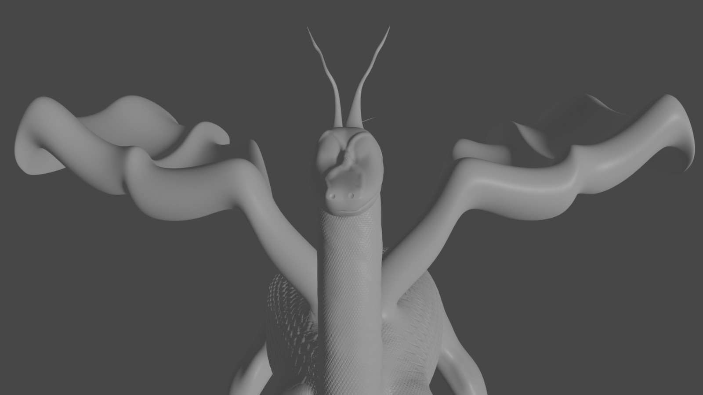
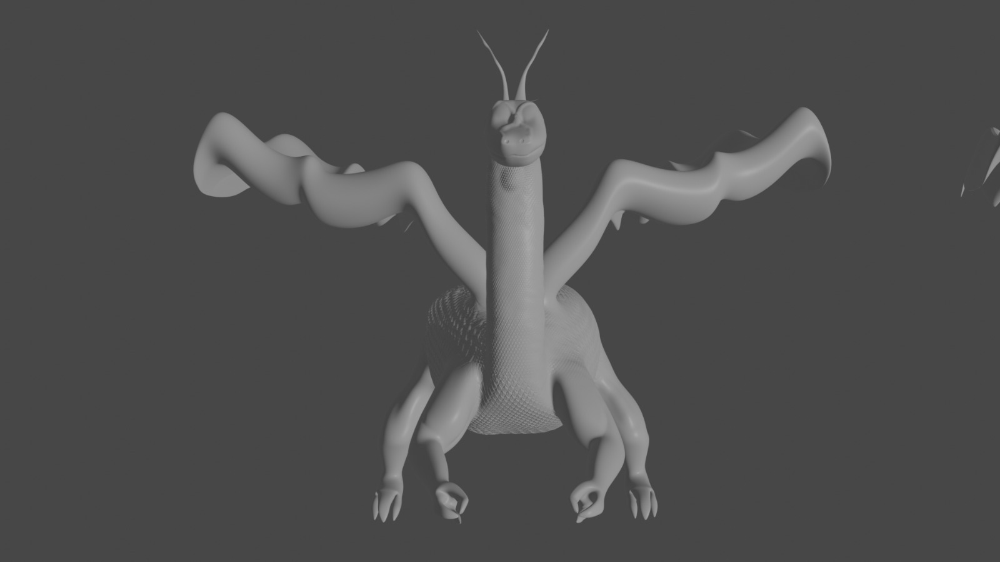
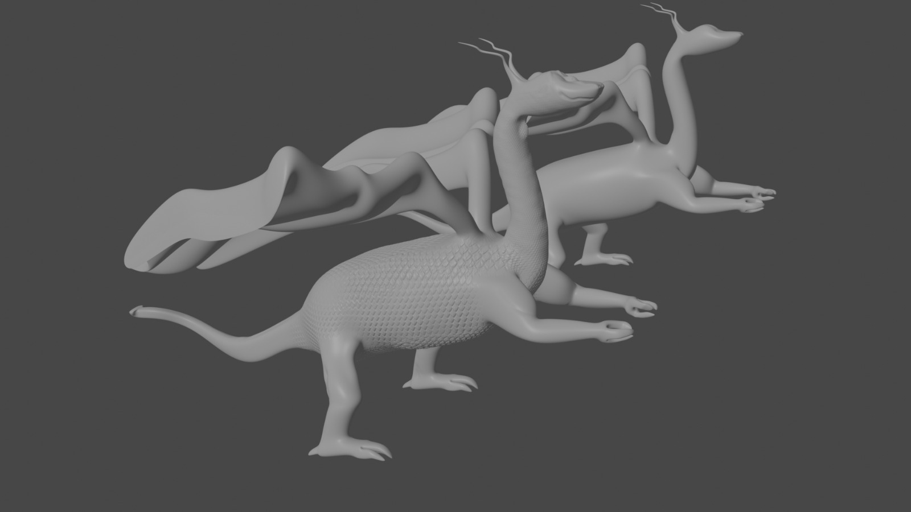
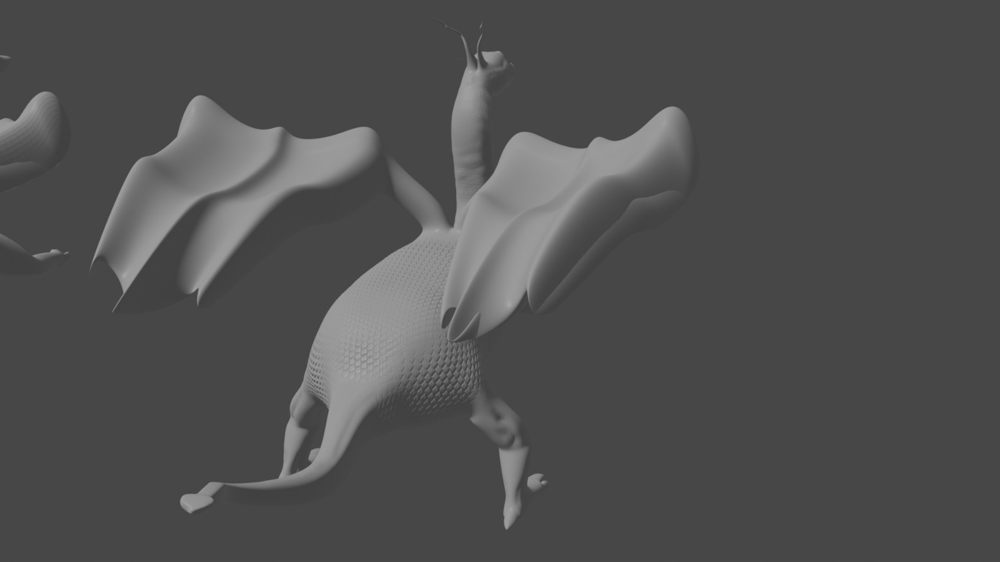

Eigene Projekte (Auswahl)
Animation
Drache
   Gebaute Projekte
WordClock
Eine Uhr die die Zeit in Worten anzeigt. Inspiriert von Qlocktwo.


Gebaut und programmiert mit einem Arduino, einer Realtimeclock und einem RGB-LED-Streifen von welchem die Farbe geändert werden kann.
Automatisches Gewächshaus
Ein Gewächshaus, welches sich autonom mit einem Arduino aufgrund von Sensorwerten selbst steuert. Dabei können Temperatur, Licht, Luft (Windsimulation) und Bewässerung gesteuert werden.
Apps
Hier sind keine Screenshots, weil die jeweiligen Apps keine schöne Oberfläche besitzen sondern eher als PoC Code gesehen wurden. Dennoch besitzen sie eine bedienbare grafische Oberfläche.
Native
App für einen Verein
Eine native Android App für einen Verein, welche den Terminkalender über eine Website parst und in einer lokalen Datenbank abspeichert. Diese kann durchsucht und gefiltert werden, wodurch nur relevante Termine angezeigt werden. Außerdem können Benutzerkonten angelegt und sich mit diesen in der App angemeldet werden sowie das Mitgliederheft heruntergeladen und in der App gelesen werden.
Die App wurde als mündliche Prüfung im Abitur im Fach Computertechnik präsentiert und mit 15 Punkten (1+) bewertet.
Plattformunabhängig - Flutter
App für eine Boulderhalle
Eine App, in welcher Boulderrouten abgehakt werden können sowie die einzelnen Benutzer sich in einer Bestenliste vergleichen können. Der Servercode wurde in PHP geschrieben, die Anwendung in Flutter programmiert.